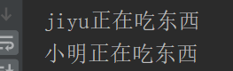

类的定义
class 类名
实例
实例名 = 类名()
一个“实例”的“特征”，就是“属性”
私有属性
在python中有两种私有属性，分别是在属性前加 一个下换线(_) 和 两个下划线(__)
一个下滑线外部可以直接访问（用运算符“.”，点不出来，在知道有的情况下，可以直接使用）
两个下划线外部不可以直接访问（实例名._类名__私有属性、这样调用、用dir(实例名)可以查看所有属性和方法）
类是一个独立存放变量（属性/方法)的空间
实例也是一个独立存放变量的空间，不同实例之间的空间互相不可见
运算符“.”调用类的属性或方法
“类”与“实例”之间的关系
类是一类事物的抽象，不是真实存在的，描绘了该类事物的共性
实例是某类事物的具体个体，是该类事物的具体表现，它是真实存在的
方法
“方法”就是封装在类里的一种特殊的函数
通常，将默认会传入的那个参数命名为self，用来表示调用这个方法的实例对象本身
方法总是定义在类中的，但是却叫“实例方法”，因为它表示该类所有实例所共有的行为

初始化（__init__）
在Python中有很多以双下划线开头且以双下划线结尾的固定方法，他们会在特定的时机被触发执行
__init__ 就是其中之一，它会在实例化之后自动被调用，以完成实例的初始化
__init__ 的参数传递过程
实例化时，产生一个类的实例 --> Python自动调用 实例.__init__(参数) --> 转换为 类.__init__(实例,参数)
析构（__del__）
"__del__”就是一个析构函数了，当使用del 删除对象时，会调用他本身的析构函数
当没有一个变量指向某个对象的时候，Python会自动销毁这个对象，以便回收内存空间
del 关键字，可以删除一个变量的指向